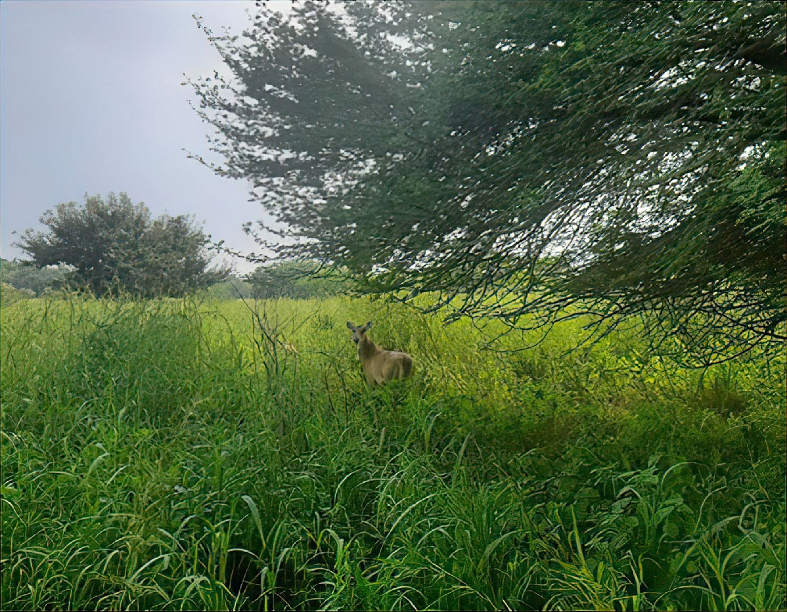
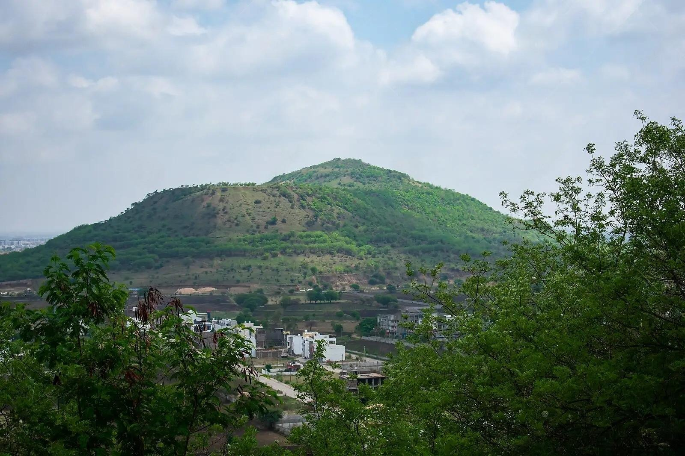

Ralamandal The Wild Life Century

Ralamandal Wildlife Sanctuary is a wildlife reserve located in Indore, Madhya Pradesh, India. It was established in 1989 and is spread over an area of 5 square kilometers. The sanctuary is home to various species of birds and animals, including leopards, black bucks, chitals, blue bulls, hyenas, barking deers, peacocks, palm-civets, porcupines, and hares
The sanctuary also has an ancient palace built by Holkars, which was primarily used as a hunting lodge. In order to protect animals and birds from noise and air pollution emanating from nearby highways, a green wall of about 10,000 trees was created
to protect the animals and birds from noise and air pollution from nearby highways, a green wall of about 10,000 trees was created within the sanctuary.
Aranya, the digital forestry website, serves as an invaluable resource for nature enthusiasts and conservationists visiting wildlife sanctuaries such as Rala Mandal. Users can easily access comprehensive information on the sanctuary's biodiversity through Aranya's user-friendly interface. The website provides up-to-date data on the number of species inhabiting the sanctuary, offering a detailed breakdown of flora and fauna. Additionally, Aranya offers real-time temperature updates, aiding visitors in planning their trips effectively. Users can also learn about the vast forest cover by accessing information on the number of trees within the sanctuary.
Devguradiya Parvat

Devguradia Forest or Devguradia City Forest is a proposed forest project located on Devguradia Hill in Indore, Madhya Pradesh, India
. The project aims to develop Devguradia as a city forest to promote ecotourism within close proximity to the city
Devguradia hill is often visited by visitors who also visit Ralamandal Sanctuary.
. The forest will cover approximately 100 hectares of land and will be developed as a recreational spot
Additionally, there are plans to develop Devguradia as a city forest to promote ecotourism within close proximity to the city of Indore. The proposed forest project aims to cover approximately 100 hectares of land and is expected to include facilities for visitors, camping, trekking, and walking, jogging, and cycling tracks
Aranya, the digital forestry platform, is essential for exploring Devguradiya Parvat. Offering real-time data on biodiversity, temperature, and forest cover, it empowers nature enthusiasts to plan safe and informed visits. The user-friendly interface provides detailed insights into the diverse species inhabiting the sanctuary, while temperature updates aid in trip planning. Information on the number of trees enriches the experience, and Aranya's cutting-edge technology ensures visitors are aware of any potential risks through a sophisticated monitoring system. In a concise 100 words, Aranya proves indispensable for those seeking a comprehensive and secure exploration of the captivating landscapes of Devguradiya Parvat.